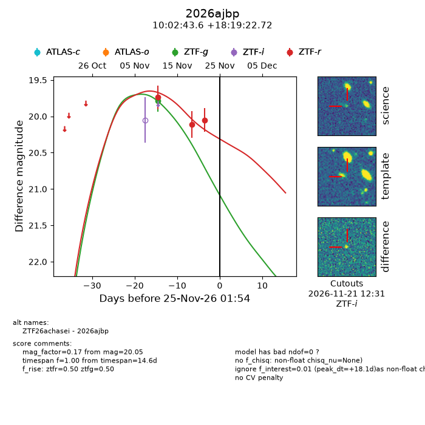
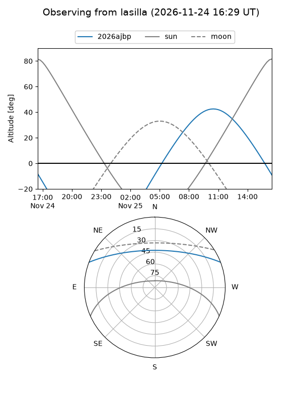
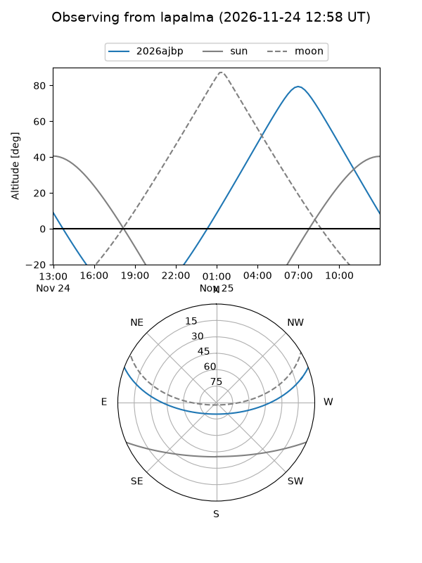
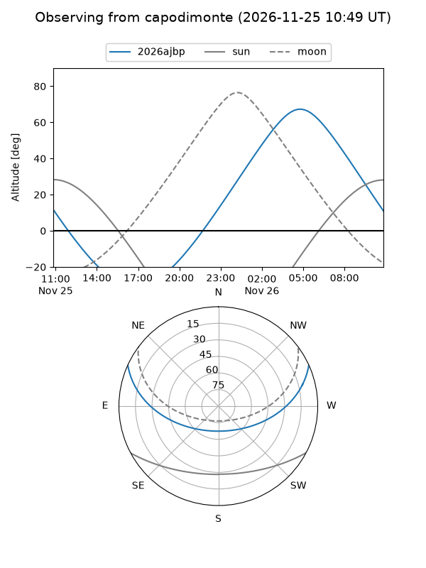
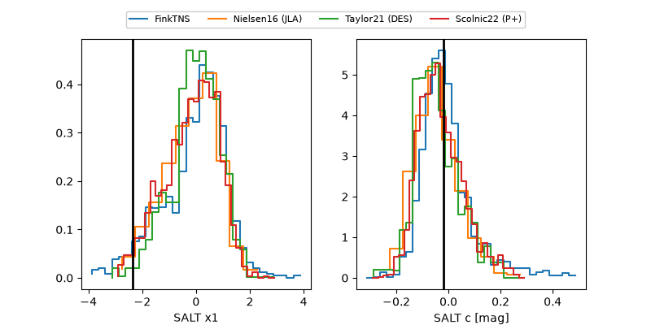

2026ajbp
Target 2026ajbp at 2026-11-25 13:56
Aliases and brokers:
FINK-ZTF: ztf.fink-portal.org/ZTF26achasei
Lasair-ZTF: lasair-ztf.lsst.ac.uk/objects/ZTF26achasei
ALeRCE-ZTF: alerce.online/object/ZTF26achasei
YSE-PZ: ziggy.ucolick.org/yse/transient_detail/2026ajbp
TNS name: wis-tns.org/object/2026ajbp
Direct TNS query: direct search
alt names
ZTF26achasei (ztf,fink_ztf)
2026ajbp (tns,yse)
Coordinates:
equatorial (ra, dec) = 150.6815,+18.32298
equatorial (HMS+DMS) = 10:02:43.57,+18:19:22.72
galactic (l, b) = (216.6117,+50.30430)
Flags:
peak dt: +18.6
Photometry:
last ztfg=19.78, ztfr=20.05
1 ztfg, 3 ztfr detections
Lightcurve

Visibility



Additional plots
